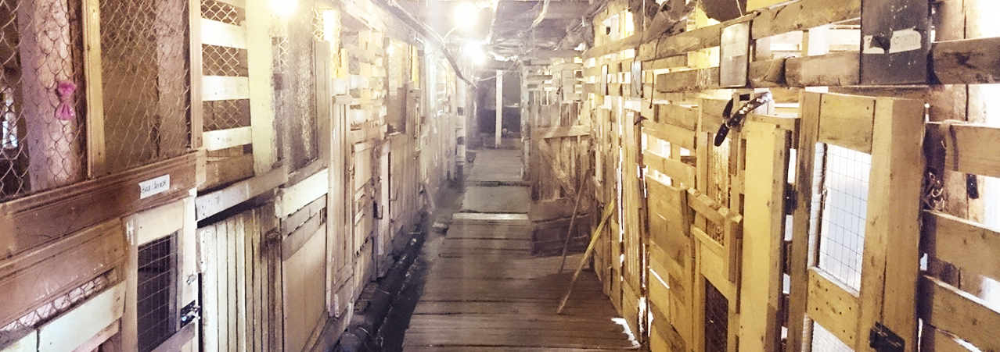
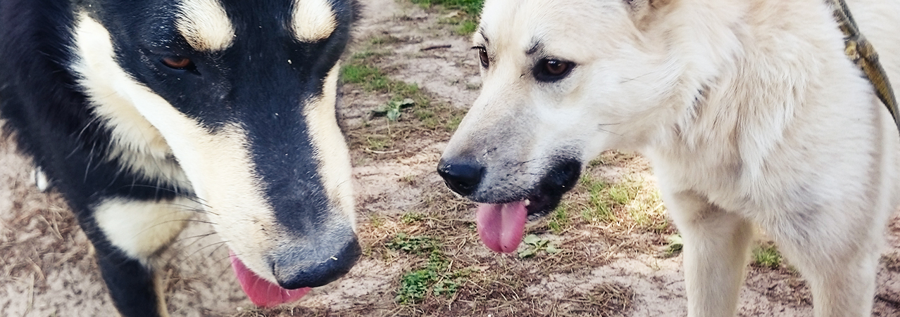
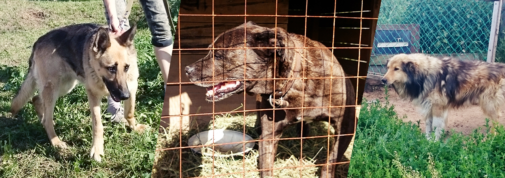
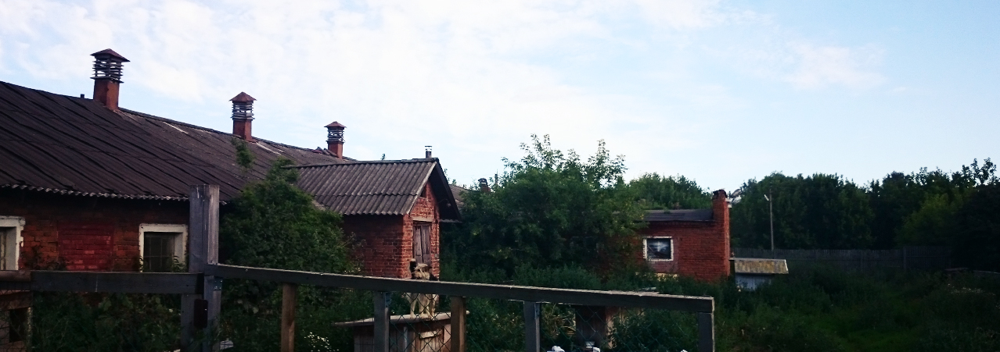
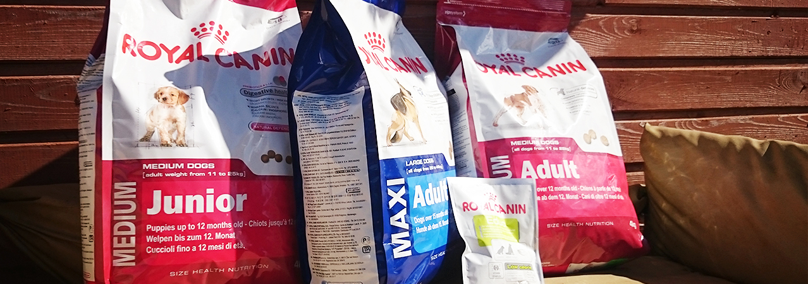

Ковчег первый полноценный приют для собак в Ярославле. Он существует целиком благодаря пожертвованиям. Денег хватает на то, чтобы обрабатывать, прививать и дважды в день кормить сухим кормом 144 собак.

В приюте работают волонтеры: выгуливают собак, следят за их чистотой, обучают командам и помогают собирать деньги на срочные нужды. Всё, что есть, делят на всех.
Если хозяину собака не нужна, это не значит, что она не может стать источником радости для кого-то еще.
Анна, волонтер приюта

Мы гуляли со Скалли (светлая дворняжка, меньше года в приюте) и Ромкой (черная дворняжка, около 2 лет в приюте). Скалли в марте исполнился год, Ромке не больше 3 лет. Скалли подбросили, как подбрасывают в приют многих щенков, а Ромку нашли на улице. Скалли и Ромка главные шоумены питомника, очень активные и веселые.

Овчарка Шейла — тихая, спокойная и умная. Попала в приют больная и со сломанной лапой. Живет здесь уже несколько лет, потому что забирают в основном здоровых собак. Питбультерьер без лапы — еще один старожил приюта, его нашли переломанным и разодранным. Видимо, заводчик тренировал его для собачьих боев, а после выбросил умирать. В приюте собрали деньги на срочную операцию. Прошло несколько лет: из-за сложного характера питбуль сидит в отдельном вольере. Грустит. Колли Максу 13 лет. Его нашли на улице и привезли в приют. Хозяева искали его, нашли в «Ковчеге», но решили оставить: ему тут лучше.

Люди приходят не только принести корм и пожертвовать деньги, но и погулять с собаками. Иногда забирают их с собой. А иногда через пару недель возвращают обратно. Так было с Ромкой, он не смог привыкнуть к жизни в квартире, иногда не дожидался прогулки, и его вернули. Мы купили в приют несколько пакетов корма и лакомства. Это первое, о чем говорят волонтеры, когда их спрашивают, как лучше помочь.
